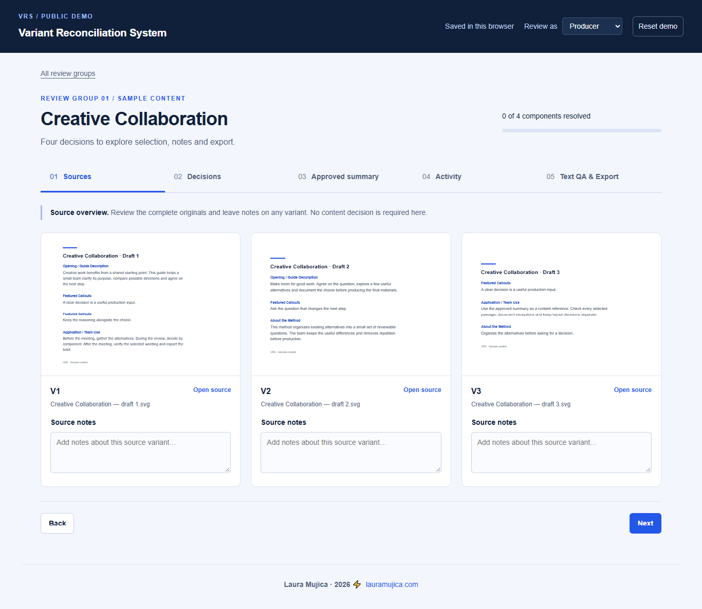

Selected work/Workflow design & internal tool/2026
Variant Reconciliation System
A review tool that turns many versions of a page into one approved decision.
I built it during a client project to produce an editable printed book from AI-generated page images. Before layout could start, the team needed to know which differences mattered and what to keep. I designed the review process, defined how the interface behaves and directed its AI-assisted development. The client's identity and material are omitted; the public demo uses sample content.
Approved summary
0 of 3 resolved- OpeningPending
- CalloutsPending
- MethodPending
Export unlocks once every component is resolved and the text check is confirmed.
- Role
- Senior Graphic DesignerExtended into workflow design, UX and QA
- Scope
- Content audit, review process, interface behavior, handoff
- Development
- AI-assisted HTML, CSS & JavaScriptDirected with ChatGPT and Claude
- Status
- Public demo, runs in the browserOriginal: Firebase Firestore + Vercel
No single version to build from.
The client had generated page images with AI and wanted to turn them into a physical book. The files had to be editable, so someone could later change a sentence or swap an image without rebuilding a page.
The pages were not consistent with each other. Versions of the same page differed in wording, layout, logo treatment and typography, and similar-looking typefaces were not always the same one. Across more than a hundred content pages, there was nothing settled to reproduce.
The images also looked convincing on screen without proving anything about print: whether text stayed legible at physical size, whether assets had enough resolution, whether the files would meet a printer's requirements.
Rebuilding every page first would have meant committing hours of production to content nobody had approved. The question to answer first was “what should the book say?”
Not every difference is a decision.
Choosing one complete page was too coarse: one version could have the strongest opening while another had the better sequence. Comparing every visible difference was too heavy: repeated wording didn't need repeated approval, and complementary content didn't have to compete.
So I split each page into components and sorted the differences into five kinds. Each kind gets the interaction that fits it.
-
Competing definitions
Two versions can't both be right. The reviewer makes a
single selection. -
Compatible material
Passages that belong together. The reviewer makes a
multiple selection. -
Repeated content
The same wording in several variants appears
once, with each source referenced. -
Supporting content
Useful in one version, not needed in the book. The reviewer can
excludeit deliberately. -
Feedback that needs words
A specific wording instruction travels as a
note, attached to the decision it explains.
Design the process before the interface.
The board only works if the material reaching it is already organized. So the workflow starts upstream, before anyone opens the tool.
-
Identify sections
Read each page as components, such as an introduction, a sequence or a callout, and locate the matching section in every variant.
-
Recognize and extract text
Recover the wording from flattened images, keep its source references and check it against the originals. AI-assisted recognition and Python scripts helped prepare these inputs.
-
Reconcile the alternatives
Find duplicates, competing wording and compatible passages. Organize the meaningful choices with text and image crops for review. The shared folder with the source files was connected to Google Drive, so the board took its links from there and generated the crops that become the components in the Decisions view.
-
Review and verify
Record selections and notes in the board, check the approved text and export a production reference.
The pilot figures describe a single review set within the larger project, not its total volume of material. The board works from a prepared dataset; it doesn't recognize newly uploaded files on its own.
Five views, one record.
The Variant Decision Board is the interface of the system. It keeps the complete sources available while showing a focused view of their components, and it moves a reviewer from looking at drafts to approving a checked handoff.

Inspect the full references.
Reviewers see each complete variant and can leave observations on it. Source notes and decision notes are separate on purpose: a comment on a draft is not a formal approval.
Decide by component.
Choose one option or several compatible ones, and approve with notes and reference files or links. Select None of these, which can be approved with a supplied alternative file or link, or exclude the component altogether.
See what has been kept.
The approved summary gathers the retained material in one place. Reviewers can inspect the wording and copy approved text or reference images.
Follow what happened.
Activity lists recorded decisions and actions, so the reasoning behind the approved content stays traceable.
Check the wording, then hand it off.
A producer verifies the extracted text against what was approved and exports a Markdown handoff. In the public edition, editing approved text invalidates its QA confirmation, so a checked state can't go stale.
Approval and QA are separate
An approved crop identifies the intended material. Its extracted text still needs its own check.
Export is gated
The review must be resolved and the applicable text checks confirmed before a handoff can be exported.
Merging stays human
Multi-selection preserves compatible passages and notes describe how to combine them. The tool never writes merged text itself.
I directed the build; AI wrote the code.
I defined what the tool should do and evaluated whether it did. My background in UX/UI and web development shaped navigation, component selection, feedback and approval states. My QA experience shaped what got tested.
Specify behavior
Selection modes, approval states, note types and the export rules came from the workflow, then went into written specifications for ChatGPT and Claude to implement.
Iterate toward shared use
The prototype grew through repeated iterations, from a local tool to one the client could open from anywhere, with decisions, notes, review state and activity retained between sessions.
Test and judge
I checked persistence, export and regressions after each round, and I decided what stayed in. The deployment and persistence work were tested during the project.
The public edition uses browser-local storage, with no backend connection and no runtime dependencies.
Testing how far automation could go.
Approved content was the input to the next phase: rebuilding the book in InDesign with live text, vector elements and replaceable images. A flattened AI page has none of those, so I tested whether one could become an independently editable page without losing its look.
I ran four approaches across three source images, including vector conversion, scripted reconstruction and hybrid text-and-asset assembly.
What the tests established
- Regional analysis, structured component data and scripts produced useful editable text and first page assemblies.
- Some builds reported no overflowing text and no missing links.
- Reading a page by component and structuring its text before assembly was a method worth keeping.
What scaling would require
- Visual review defined what a full rebuild needs: exact placement, a complete icon family, decorative details and typographic matching.
- Those assets and rules weren't yet specified, so closing the gap meant more correction work than the agreed time and budget allowed.
- Outlined text would be vector but not editable, so live text stayed a hard requirement.
With the findings consolidated, the assessment was clear: partial editability had been demonstrated, and completing all five volumes would take more time and budget than the project had. I shared that with the client and recommended continuing with an InDesign automation specialist. The handoff included a client-facing report and a technical document covering the approaches tested, available files, open requirements and next steps, so my phase closed with documented evidence and a clear route forward.
The real workflow, with sample content.
The public edition condenses the working prototype and replaces everything that belonged to the client. It keeps the source and component relationships and the selection modes, so the interaction is the real one. The sample material, Creative Collaboration, illustrates the workflow and isn't presented as another client project.
| Original project | Public demonstration | |
|---|---|---|
| Content | Client-specific source material and identity | Replacement sample text, document previews and an independent visual style |
| Persistence | Shared review data through Firebase Firestore | Browser-local decisions and notes |
| Source files | A shared folder connected to Google Drive; the board read the links and generated the component crops | Sample documents and component previews bundled with the demo |
| Roles | A separate producer/admin workflow | Text QA and export open for exploration |
| Decisions | Real client decisions | A fresh, resettable review for each browser |
What the system does not do
- Audit files it hasn't been given
- Choose content for the reviewer
- Merge wording into a final text
- Produce an InDesign document
A system for deciding before producing.
The project took me across identity, content, interfaces, testing and physical production. I could direct AI-assisted implementation and judge its results because I understood the workflow and its dependencies, and that same judgment led to the decision to recommend specialist support.
- Identity manualThe first manual was AI-generated. I vectorized it and refined it to reflect the final decisions, so it could serve as the base and the limits for the initial Markdown file of rules.
- Review systemA working tool for reviewing variants, recording decisions and preparing checked content for a pilot.
- Book productionPilot layouts, print specifications and reconstruction tests that defined the requirements and limits of a scalable approach. The full five-volume book and print run went beyond the time and budget of my phase.